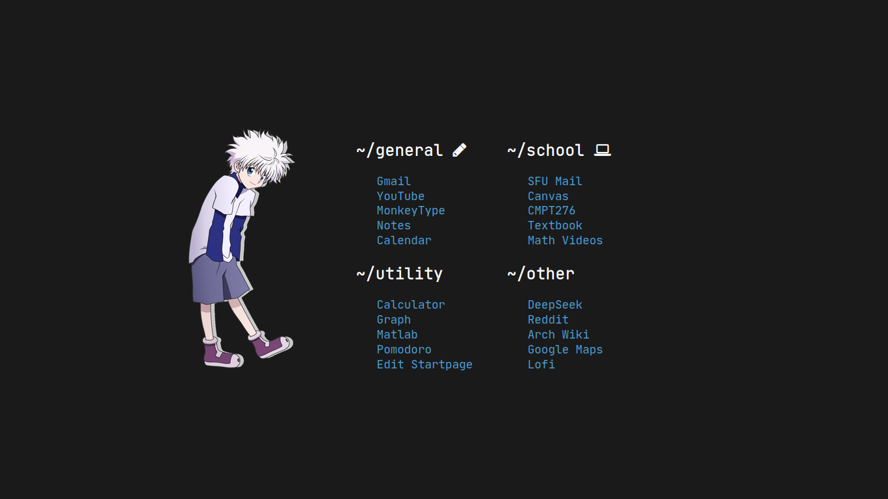

Pomodoggo
A minimal pomodoro website with options to change time values. I created the timer in Javascript.
Browser Startpage
 Startpage I use on startup for Firefox/Google Chrome. The page consists of links that I switch out per semester. I prefer to have no bookmarks on my brower for a more clean looking browser so having this page helps with aesthetics and efficiency.
Startpage I use on startup for Firefox/Google Chrome. The page consists of links that I switch out per semester. I prefer to have no bookmarks on my brower for a more clean looking browser so having this page helps with aesthetics and efficiency.